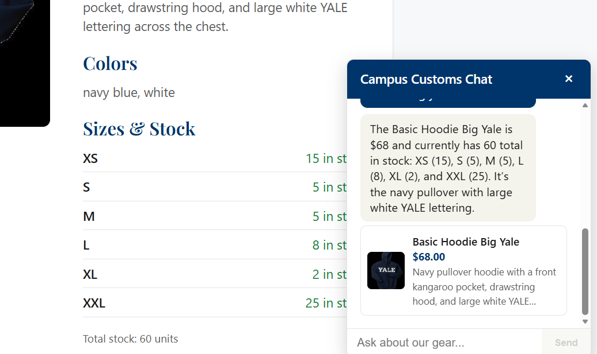
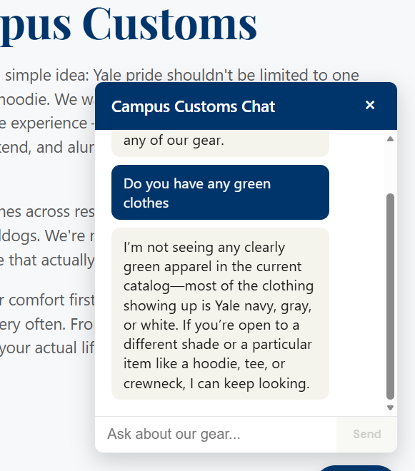

Catalogue & Product Pages
| Check | Result | Status |
|---|---|---|
Products list endpoint (GET /products) | Returns full catalogue with name, price, short description, image URL | PASS |
Product detail endpoint (GET /products/{id}) | Returns description, colors, price, per-size stock, total stock | PASS |
| Unknown product id | Returns 404 instead of a fake result | PASS |
Product image serving (/media/products/...) | Images load (200) | PASS |
| Frontend routes: Home, Products, About, Login, Create Account, Product Detail | All return 200 from the Vite dev server | PASS |
Accounts & Login
| Check | Result | Status |
|---|---|---|
| Create account | New user row created, password never returned in the response | PASS |
| Duplicate email on signup | Rejected with 409 | PASS |
| Login with correct password | Returns the account's profile info | PASS |
| Login with wrong password | Rejected with 401 | PASS |
Shop Chat Agent
| Check | Result | Status |
|---|---|---|
| General product search ("Do you have any Yale crewnecks?") | Returned real matching products as clickable cards, not invented ones | PASS |
| Page context ("Is this in stock in size L?" while viewing a product page) | Correctly resolved "this" to the viewed product and gave the real stock count | PASS |
| Conversation memory ("What product were we just talking about?") | Correctly recalled the prior product from reloaded history | PASS |
Chat history reload (GET /chat/history/{id}) | Returned the full saved conversation in order, with product ids attached | PASS |
| Guest chat is not persisted | Stored message count for a logged-in user was unaffected by a guest message | PASS |
| Out-of-stock alternatives | When the requested size was unavailable, the agent proactively suggested real in-stock alternatives instead of a dead end | PASS |
| Prompt-injection attempt ("ignore all prior instructions...") | Declined without inventing a discount code or breaking character | PASS |
| Empty chat message | Rejected with 400 instead of calling the agent | PASS |
Build & Styling
| Check | Result | Status |
|---|---|---|
Production build (npm run build) | TypeScript check and Vite build both complete with no errors | PASS |
Note: the in-app Browser preview isn't enabled on this install, so this check was done with the backend and frontend dev servers running and verified via direct API/route calls rather than a visual screenshot. All throwaway test accounts and chat history created during this check were deleted afterward — the live database is unchanged from before the check.
Screenshots

